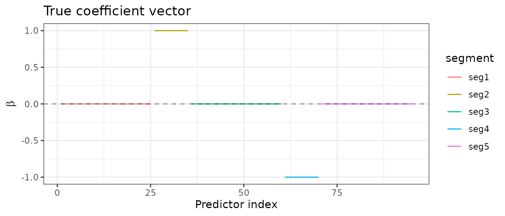
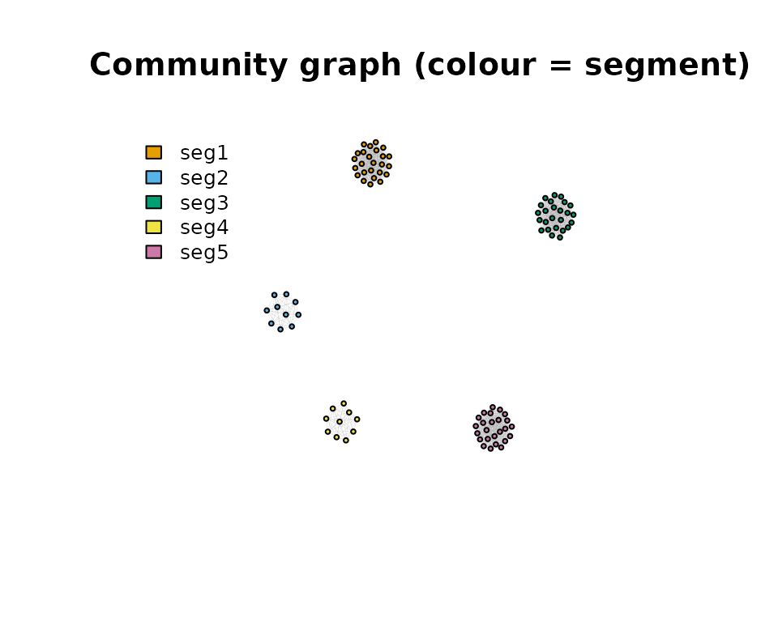
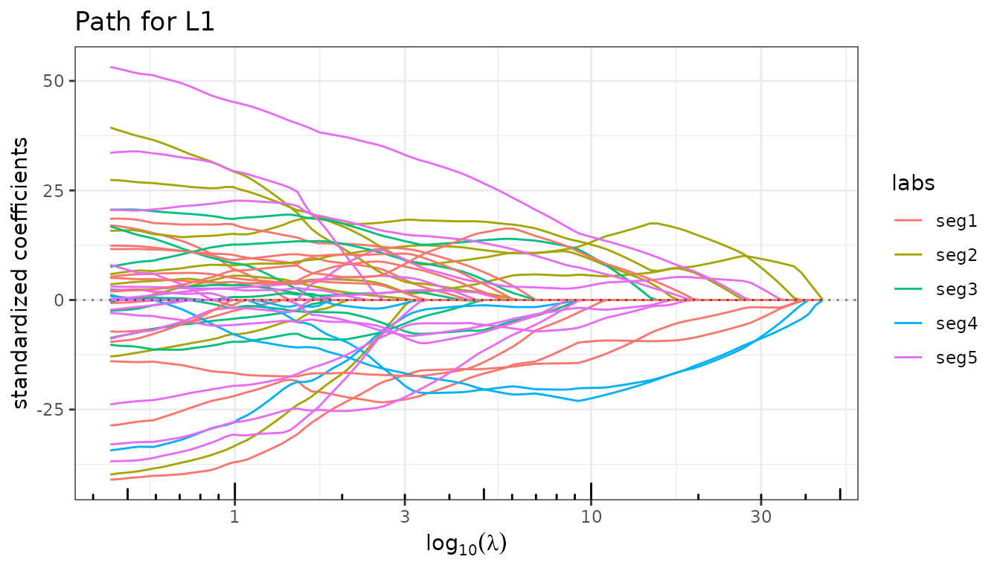
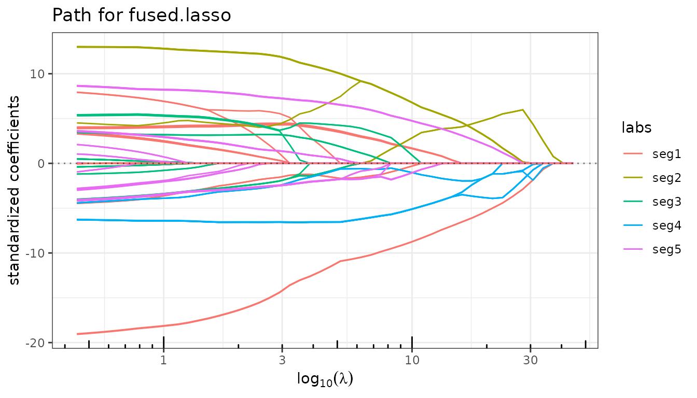
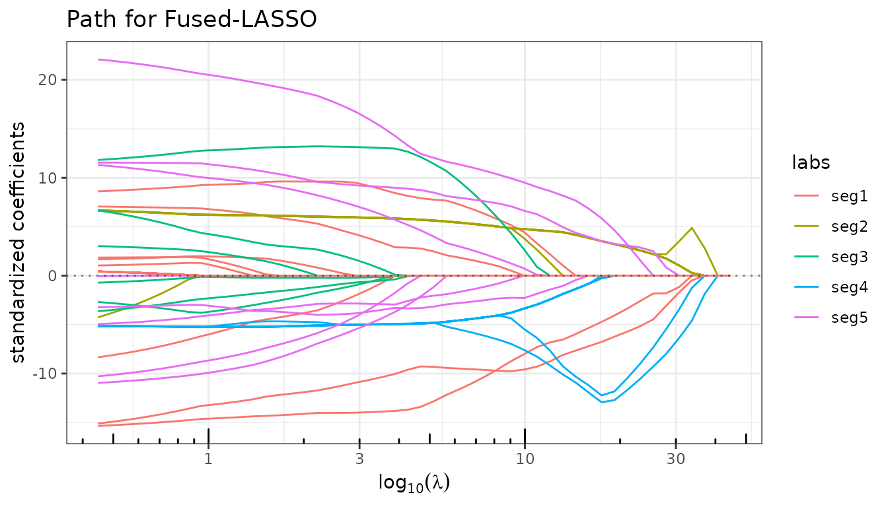
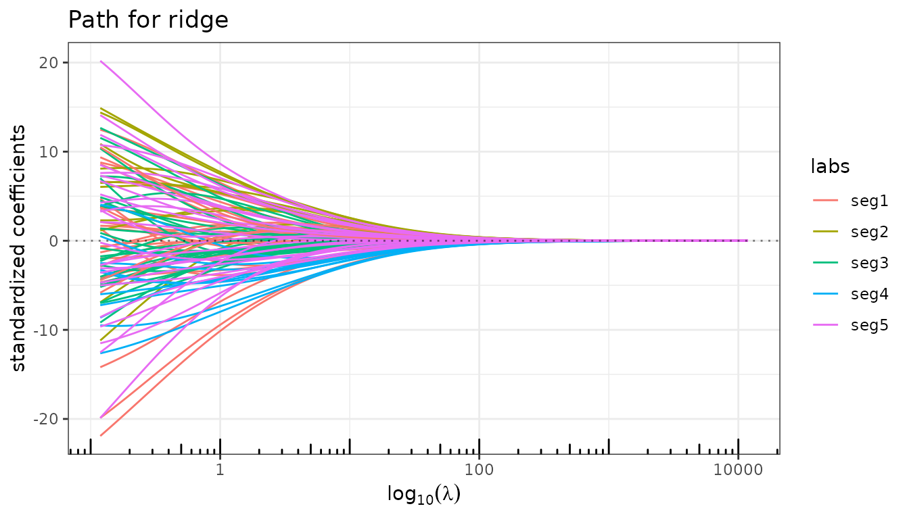
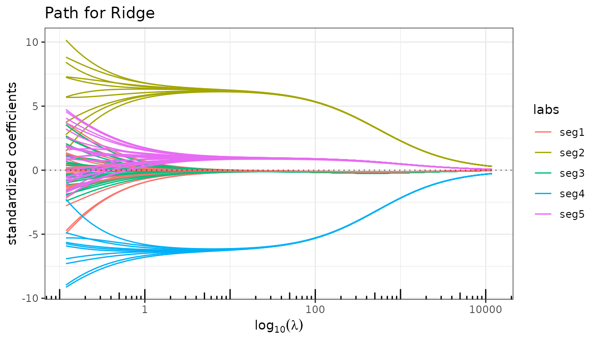
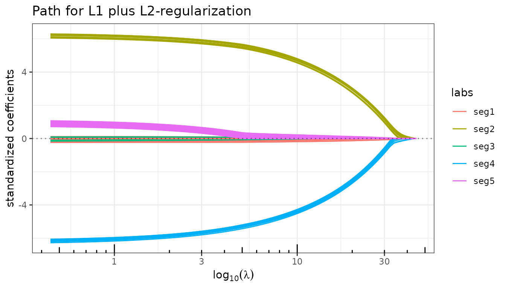
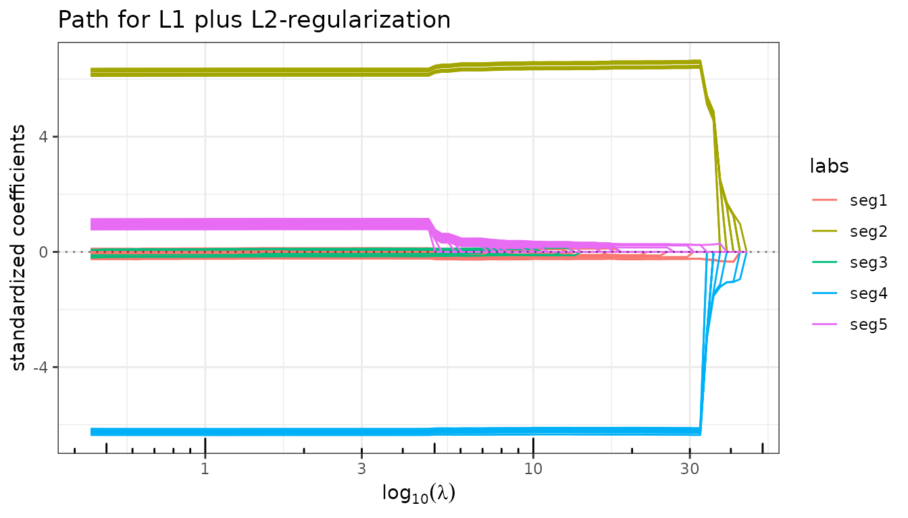
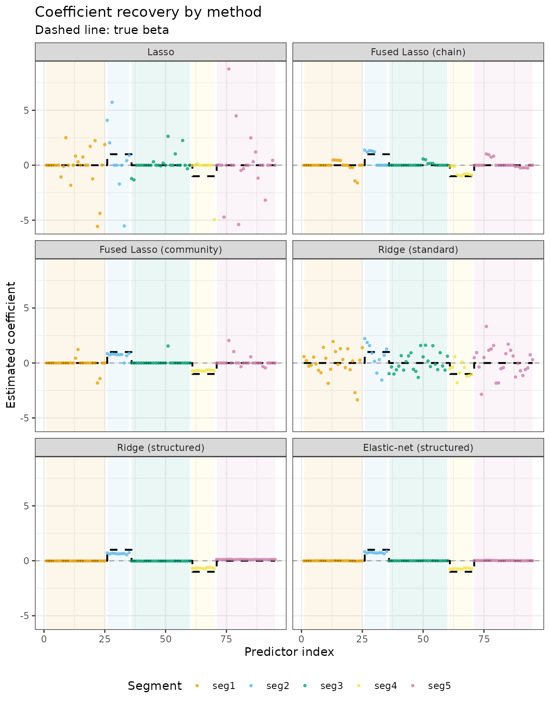

Recovering a Structured Signal with Quadrupen
From the Lasso to structured regularization via graph Laplacians
Source:vignettes/structured-signal-recovery.Rmd
structured-signal-recovery.RmdMotivation
Sparse penalties such as the Lasso treat all predictors symmetrically: coefficients are shrunk independently without any notion of which predictors are related. In many applications, however, the signal has a known structure — predictors are grouped, ordered, or connected through a graph — and penalties that exploit this structure can substantially improve estimation.
This vignette builds a progressively richer family of penalties on a single simulation, showing how incorporating structural knowledge step by step leads to better coefficient recovery.
Setup
Simulation
We simulate a linear model with \(p = 95\) predictors and \(n = 50\) observations. The true coefficient vector \(\beta\) is piecewise constant: it is zero over three large segments (sizes 25, 25, 25) and takes values \(+1\) and \(-1\) over two smaller active blocks (sizes 10 each).
set.seed(42)
p <- 95
n <- 50
beta <- rep(c(0, 1, 0, -1, 0), c(25, 10, 25, 10, 25))
## Block-correlated predictors: high within-segment, zero across segments
rho <- 0.75
Soo <- toeplitz(rho^(0:24)) # Toeplitz correlation within zero segments
Sww <- matrix(rho, 10, 10) # constant correlation within active segments
Sigma <- bdiag(Soo, Sww, Soo, Sww, Soo)
diag(Sigma) <- 1
X <- as.matrix(matrix(rnorm(p * n), n, p) %*% chol(Sigma))
y <- X %*% beta + rnorm(n, 0, 10)
## Segment labels (for plot legends)
segments <- rep(1:5, c(25, 10, 25, 10, 25))
segment_names <- paste0("seg", 1:5)
seg_labels <- segment_names[segments]The five segments are clearly visible in the true signal:
data.frame(index = seq_along(beta), beta = beta, segment = seg_labels) |>
ggplot(aes(x = index, y = beta, colour = segment)) +
geom_step() + geom_hline(yintercept = 0, linetype = "dashed", alpha = 0.4) +
labs(x = "Predictor index", y = expression(beta), title = "True coefficient vector") +
theme_bw()
Community graph and its Laplacian
The structural prior we wish to encode is: predictors within the same segment should have similar coefficients. This is captured by a community graph whose edges connect all pairs of predictors belonging to the same segment (a union of disjoint cliques).
## Adjacency matrix: clique within each segment, no edges across
Ioo <- matrix(1, 25, 25)
Iww <- matrix(1, 10, 10)
A <- as.matrix(bdiag(Ioo, Iww, Ioo, Iww, Ioo))
diag(A) <- 0
## Graph Laplacian: L = D - A (regularized for positive definiteness)
L2 <- -A
diag(L2) <- colSums(A) + 1e-2The Laplacian \(L_2\) defines the quadratic form
\[\beta^\top L_2\, \beta = \sum_{(i,j)\in E} (\beta_i - \beta_j)^2,\]
which penalizes differences between connected predictors.
Adding \(\lambda_2 \beta^\top L_2 \beta /
2\) to the loss therefore encourages within-segment coefficients
to be equal — a perfect match for the piecewise-constant signal. Note
that \(L_2\) is passed as the
struct argument to ridge() and
elastic_net().
For the Fused Lasso, the graph structure is encoded differently:
struct takes the adjacency matrix \(A\) directly, since the fusion penalty
is
\[\lambda_2 \sum_{(i,j)\in E} |\beta_i - \beta_j|,\]
an \(\ell_1\) (not \(\ell_2\)) penalty on pairwise differences. The graph topology is the same, but the penalty form differs.
if (requireNamespace("igraph", quietly = TRUE)) {
g <- igraph::graph_from_adjacency_matrix(A, mode = "undirected")
cols <- c("#E69F00", "#56B4E9", "#009E73", "#F0E442", "#CC79A7")
vertex_colors <- cols[segments]
igraph::plot.igraph(
g, vertex.color = vertex_colors, vertex.size = 3,
vertex.label = NA, edge.width = 0.1,
main = "Community graph (colour = segment)"
)
legend("topleft", legend = segment_names, fill = cols, bty = "n", cex = 0.8)
}
Lasso: a baseline without structural knowledge
The Lasso applies an element-wise \(\ell_1\) penalty and treats all predictors independently. With highly correlated predictors it tends to select one representative per block arbitrarily, producing an erratic path.
fit_lasso <- lasso(X, y, intercept = FALSE)
fit_lasso
#> Linear regression with L1 penalizer.
#> - number of coefficients: 95 + intercept
#> - lambda regularization: 100 points from 44.7 to 0.447
#> - gamma regularization: 0
fit_lasso$plot_path(labels = seg_labels)
Fused Lasso: penalizing differences between consecutive predictors
The Fused Lasso adds an \(\ell_1\) penalty on differences between adjacent coefficients on top of the standard \(\ell_1\) penalty:
\[\min_\beta \frac{1}{2}\|y - X\beta\|^2 + \lambda_1 \|\beta\|_1 + \lambda_2 \sum_{i=1}^{p-1} |\beta_{i+1} - \beta_i|.\]
By default, fused_lasso() uses a chain
graph (consecutive pairs), which is appropriate for ordered or
spatial signals.
fit_fused_chain <- fused_lasso(X, y, lambda2 = 5, intercept = FALSE)
fit_fused_chain
#> Linear regression with fused.lasso penalizer.
#> - number of coefficients: 95 + intercept
#> - l1 regularization: 50 points from 44.7 to 0.447
#> - l2 regularization: 5
fit_fused_chain$plot_path(labels = seg_labels)
Fused Lasso with the community graph
Replacing the chain by the community adjacency matrix \(A\) fuses predictors within the same segment rather than consecutive ones. This directly targets the true block structure of \(\beta\).
fit_fused_comm <- fused_lasso(X, y, lambda2 = 5, struct = A, intercept = FALSE)
fit_fused_comm
#> Linear regression with fused.lasso penalizer.
#> - number of coefficients: 95 + intercept
#> - l1 regularization: 50 points from 44.7 to 0.447
#> - l2 regularization: 5
fit_fused_comm$plot_path(labels = seg_labels)
Structured Ridge: shrinking toward block-constant solutions
The standard ridge regression shrinks all coefficients toward zero. The structured ridge replaces the identity by a positive semidefinite matrix \(S\):
\[\min_\beta \frac{1}{2}\|y - X\beta\|^2 + \frac{\lambda_2}{2}\, \beta^\top S\, \beta.\]
With \(S = L_2\) (the community Laplacian), the penalty becomes \(\frac{\lambda_2}{2}\beta^\top L_2 \beta\), which shrinks within-segment differences rather than the coefficients themselves.
Standard ridge
fit_ridge_std <- ridge(X, y, intercept = FALSE)
fit_ridge_std$plot_path(labels = seg_labels)
The path is a blur: all predictors are shrunk toward zero with no differentiation between segments.
Structured ridge (\(S = L_2\))
fit_ridge_struct <- ridge(X, y, struct = L2, lambda_max = 1000, intercept = FALSE)
fit_ridge_struct$plot_path(labels = seg_labels)
The Laplacian prior forces coefficients within the same segment to track each other. The two active segments (2 and 4) now emerge as coherent bundles.
Structured Elastic-net: sparsity + graph-Laplacian regularization
The Elastic-net combines an \(\ell_1\) penalty with a quadratic penalty:
\[\min_\beta \frac{1}{2}\|y - X\beta\|^2 + \lambda_1\|\beta\|_1 + \frac{\lambda_2}{2}\, \beta^\top S\, \beta.\]
Setting \(S = L_2\) yields the structured Elastic-net: the \(\ell_1\) term drives entire segments to zero (sparsity at the segment level), while the Laplacian term forces the non-zero segments to be internally smooth.
fit_enet_struct <- elastic_net(X, y, lambda2 = 5, struct = L2, intercept = FALSE)
fit_enet_struct
#> Linear regression with L1 plus L2-regularization penalizer.
#> - number of coefficients: 95 + intercept
#> - lambda regularization: 100 points from 44.7 to 0.447
#> - gamma regularization: 5
fit_enet_struct$plot_path(labels = seg_labels)
The two active segments now enter the path as well-separated, near-constant bundles while the three zero segments stay at zero.
Debiased structured Elastic-net
The \(\ell_1\) penalty introduces shrinkage bias. Refitting the model on the selected support without penalization recovers near-unbiased estimates.
fit_enet_struct$debias <- TRUE
fit_enet_struct$plot_path(labels = seg_labels)
fit_enet_struct$debias <- FALSECoefficient recovery: a side-by-side comparison
We extract the BIC-selected coefficient vector for each method and compare visually against the true \(\beta\).
methods <- list(
"Lasso" = fit_lasso,
"Fused Lasso (chain)" = fit_fused_chain,
"Fused Lasso (community)"= fit_fused_comm,
"Ridge (standard)" = fit_ridge_std,
"Ridge (structured)" = fit_ridge_struct,
"Elastic-net (structured)"= fit_enet_struct
)
extract_coef <- function(fit) {
b <- fit$get_model("BIC")
if ("Intercept" %in% names(b)) b <- b[-1] # drop intercept
b
}
df_coef <- do.call(rbind, lapply(names(methods), function(nm) {
b <- extract_coef(methods[[nm]])
data.frame(
method = factor(nm, levels = names(methods)),
index = seq_along(b),
value = as.numeric(b),
segment = seg_labels
)
}))
df_true <- data.frame(
index = seq_along(beta),
beta = beta,
segment = seg_labels
)
## Background shading for each segment
seg_bounds <- data.frame(
xmin = c(1, 26, 36, 61, 71),
xmax = c(25, 35, 60, 70, 95),
fill = factor(1:5)
)
ggplot(df_coef, aes(x = index, y = value)) +
geom_rect(data = seg_bounds,
aes(xmin = xmin, xmax = xmax, ymin = -Inf, ymax = Inf, fill = fill),
alpha = 0.08, inherit.aes = FALSE) +
scale_fill_manual(values = c("#E69F00","#56B4E9","#009E73","#F0E442","#CC79A7"),
guide = "none") +
geom_hline(yintercept = 0, linetype = "dashed", alpha = 0.3) +
geom_step(data = df_true, aes(y = beta), colour = "black", linewidth = 0.8,
linetype = "dashed") +
geom_point(aes(colour = segment), size = 0.8, alpha = 0.7) +
scale_colour_manual(values = c("#E69F00","#56B4E9","#009E73","#F0E442","#CC79A7")) +
facet_wrap(~ method, ncol = 2) +
labs(x = "Predictor index", y = "Estimated coefficient",
title = "Coefficient recovery by method",
subtitle = "Dashed line: true β",
colour = "Segment") +
theme_bw() +
theme(legend.position = "bottom")
The progression illustrates the benefit of structural priors:
- Lasso: selects a few predictors erratically within the active segments.
- Fused Lasso (chain): smoother path, but the chain graph blurs transitions between segments rather than reinforcing block structure.
- Fused Lasso (community): within-segment fusion correctly pools the active blocks, but the \(\ell_1\) fusion penalty may still miss some predictors.
- Ridge (standard): all coefficients shrunk toward zero; the block pattern is not recovered.
- Ridge (structured): within-segment coefficients cluster together; the active segments are identifiable but not zeroed out.
- Elastic-net (structured): sparsity zeros out the inactive segments while the Laplacian smooths the active ones — the closest recovery to the true signal.